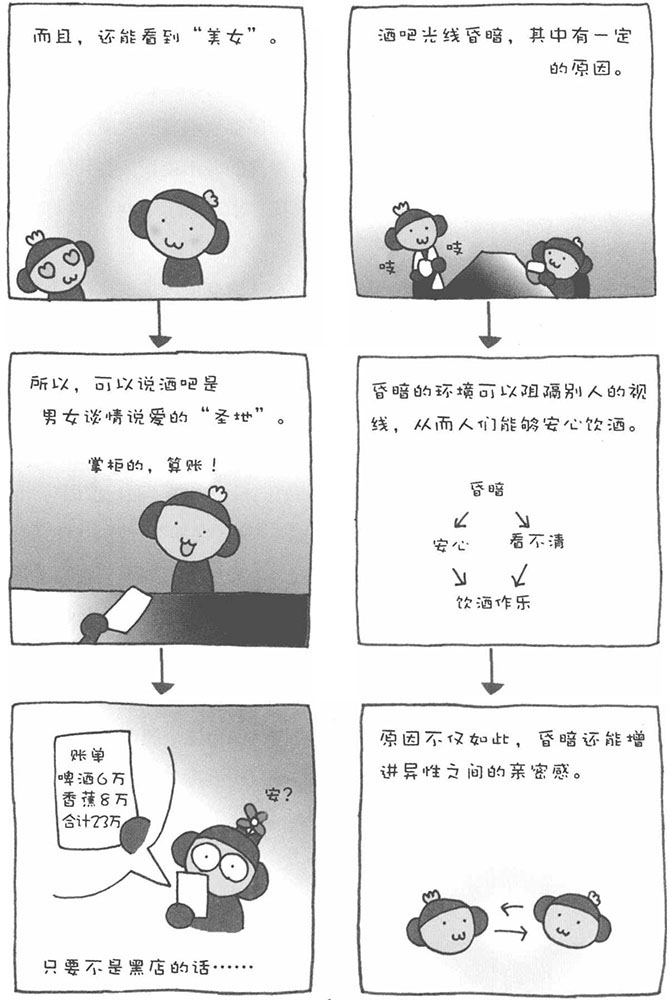

一提到酒吧，我们就想到昏暗的吧台和吧台后面那有点吓人的酒保（调酒师、掌柜）。那是大人们买醉的去处。酒吧之所以要昏暗，其中有一定的原因。包括人类在内的很多动物，眼睛都不会不自觉地往明亮的地方看，而昏暗的环境可以阻隔别人的视线，因而人们可以安心地饮酒作乐。
不过，酒吧昏暗的原因不仅仅如此。对于谈情说爱的男女来说，昏暗的环境也是相当惬意的。心理学家卡根曾做过一个实验，目的是调查在明亮和昏暗的房间中男女的行为会有什么不同。结果显示，在昏暗的小房间中，男女身体紧密接触，亲密感激增。也就是说，昏暗的环境可以使男女之间变得非常亲密。此外，人喝了酒之后，视力就没有清醒时好了。因此，男性喝醉酒之后，眼中的"美女"往往比实际还要漂亮。如果再加上昏暗的光线，这种效果就更强了。
因此，酒吧可以说是男性向女性表达心意的理想场所，而对于女性来说，酒吧简直就是一个可以"一石二鸟"的好地方。如果女性对男性说"走！带你去一个我熟悉的酒吧"，这样一来可以刺激男性的自尊心，与此同时，在酒吧里还能让自己显得更漂亮。也许有人说，日式居酒屋也适合谈情说爱，但哪里总让人感觉太过传统、放不开。相反，在酒吧里，座椅之间的距离都比较近，和对方也就相距70～80厘米，相互可以进入彼此的私人空间。如果长时间待在对方的私人空间中，双方更容易发展恋情。
在美国西部拓荒时代，酒馆里卖酒时对每位客人有量的限制。然而，常有酒客喝醉之后，自行到柜台里拿酒喝，于是酒馆便在客人的桌子与柜台之间设置了一根横木。这就是如今吧台的雏形。也就是说，吧台本来有控制客人饮酒量的作用。后来，在吧台的阻隔之下，客人只好把想喝酒的冲动转移到身边异性的身上。这也是酒吧为什么适合谈情说爱的原因之一。
